Api The Cat es un juego de plataformas original para Nintendo Entertainment System (NES), publicado en cartucho físico por Los Pat Moritas. Seguís a Api por una ciudad nocturna llena de niveles inspirados en sonidos urbanos — desde pasillos de arcade hasta junglas suburbanas.
Cartucho fabricado a mano · Compatible con NES y Famicom · Incluye 8 temas originales
Comprar en eBay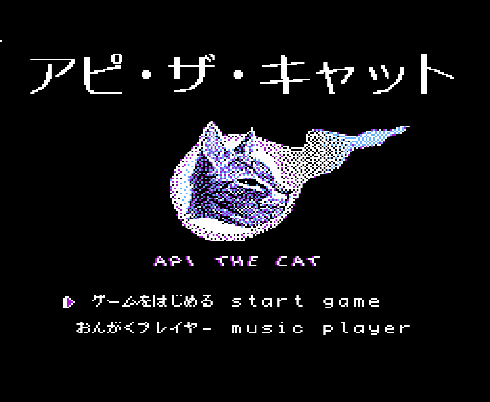
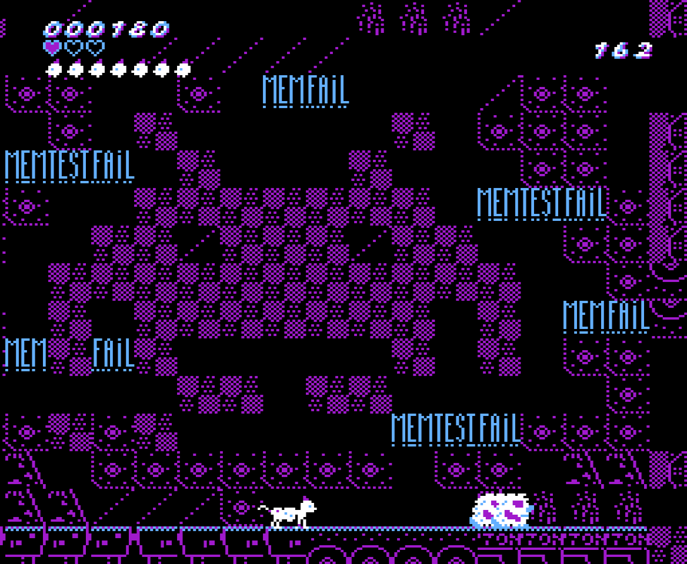
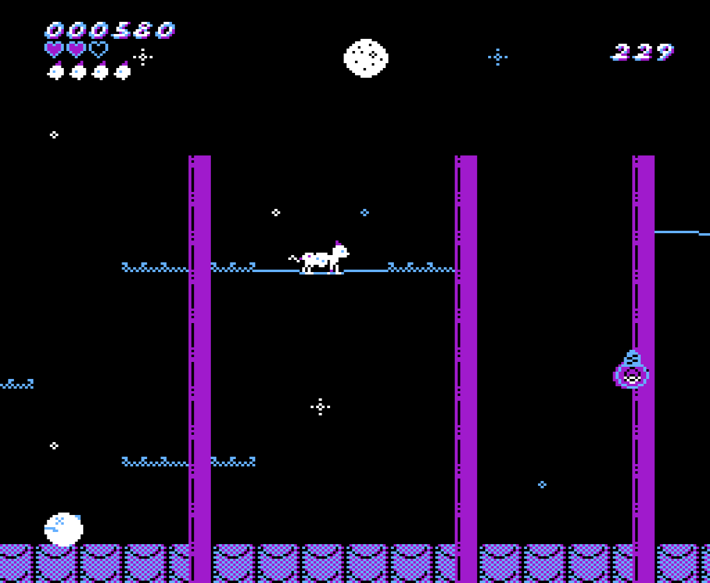
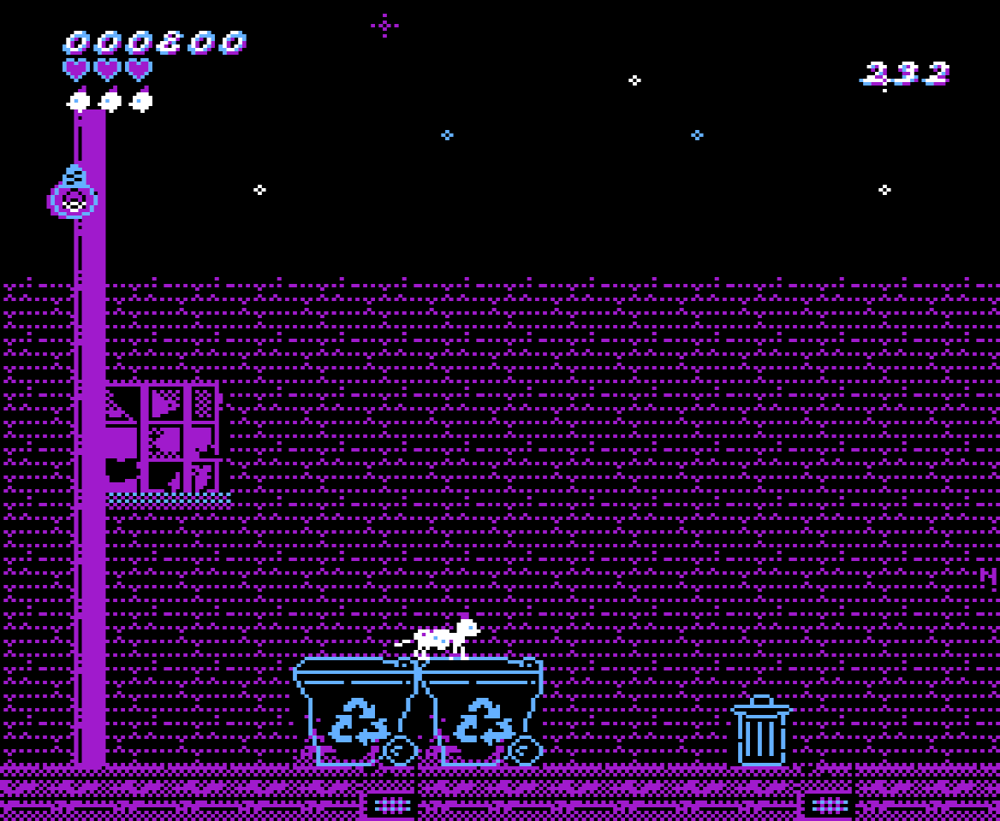
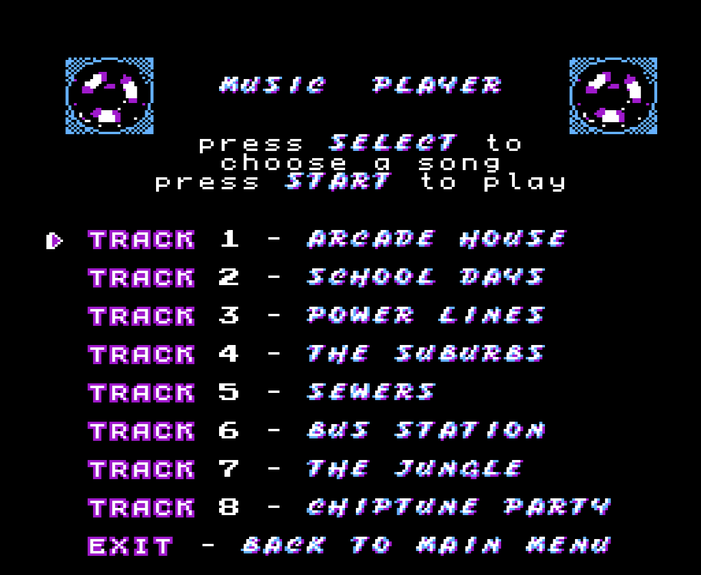
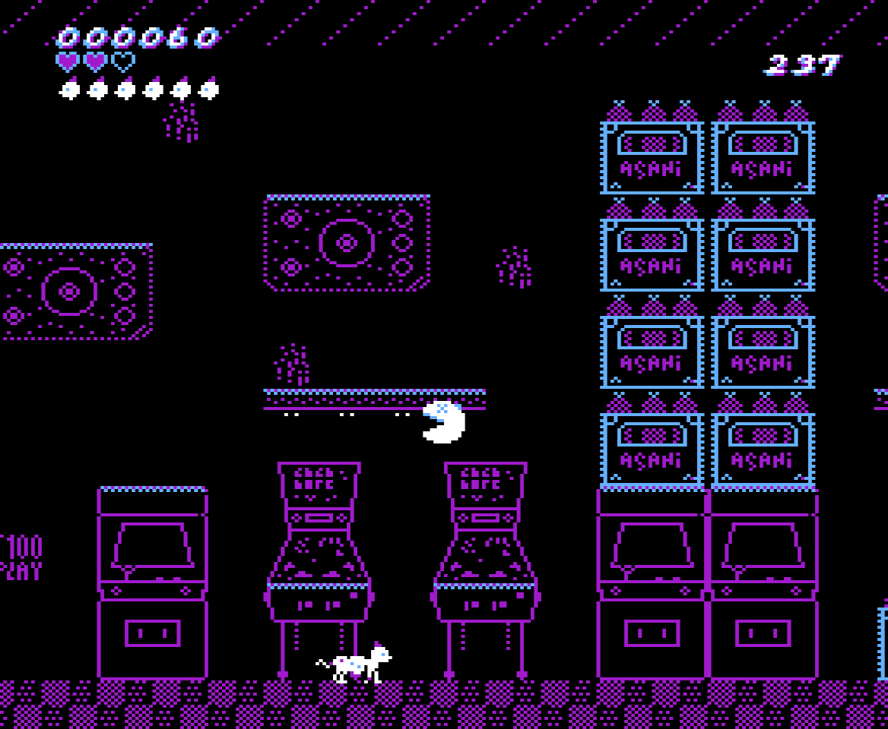
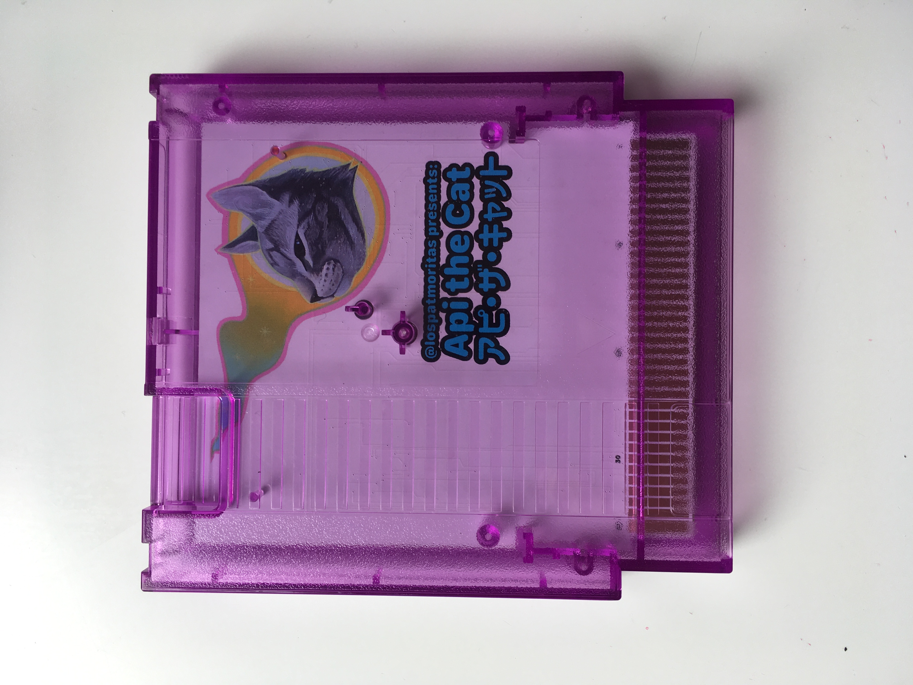
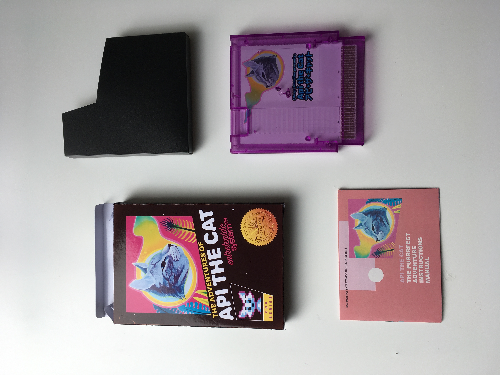
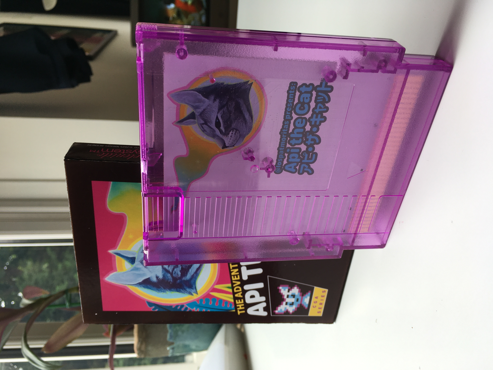
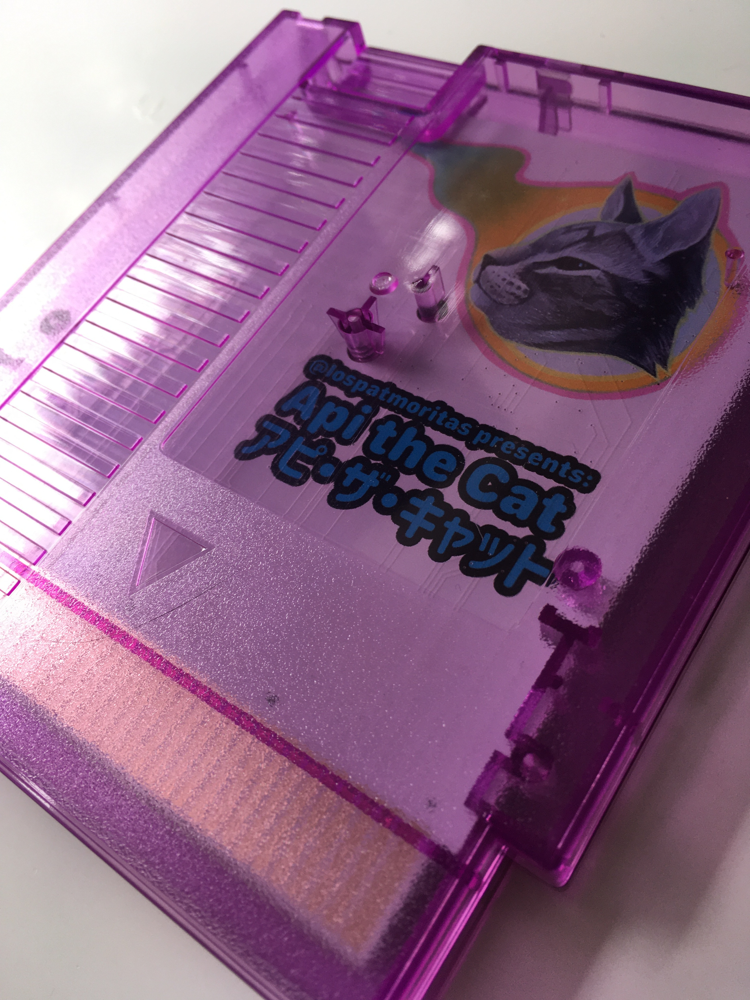
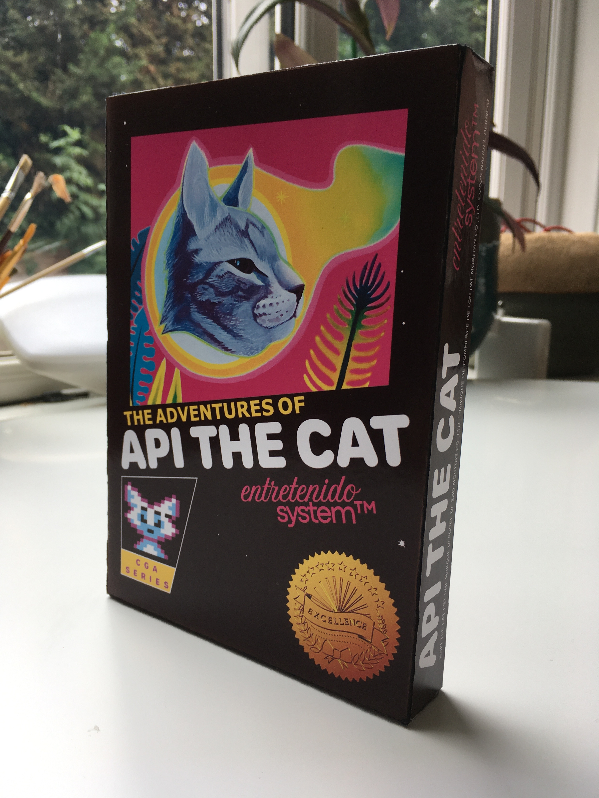
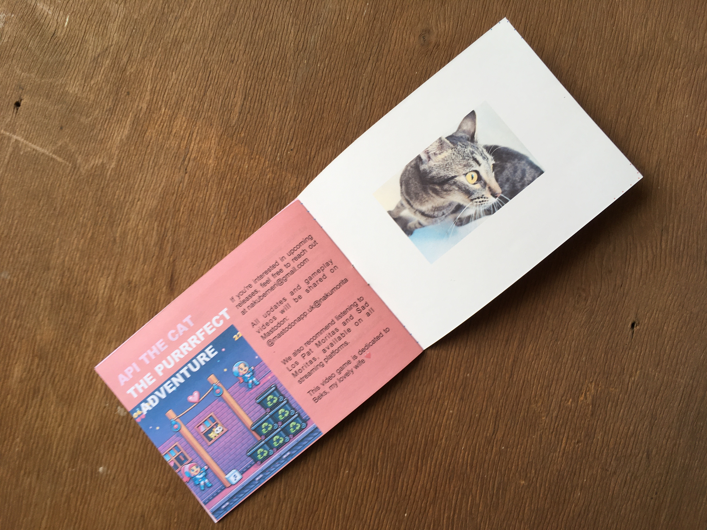
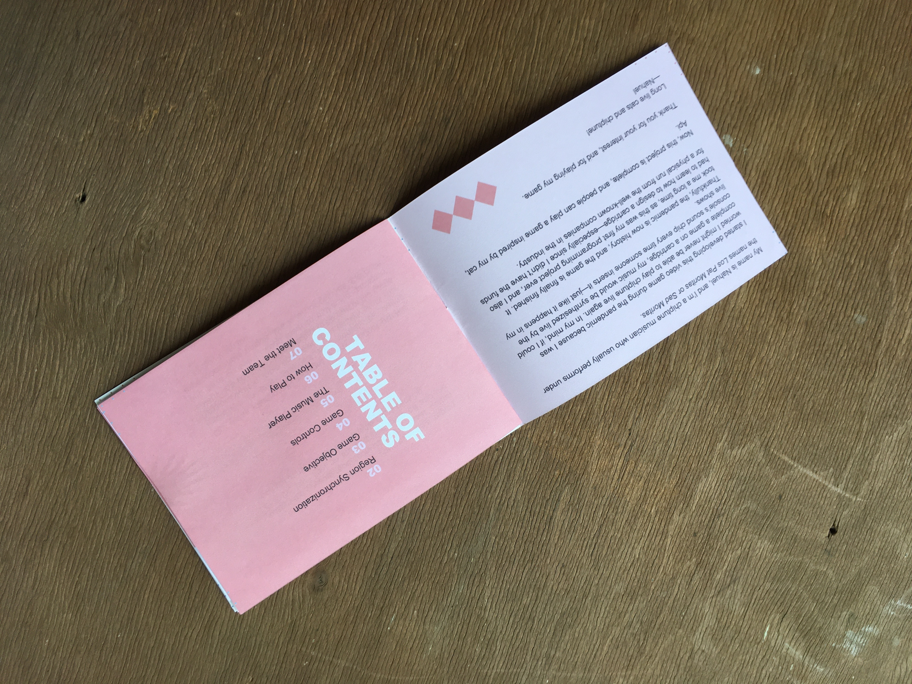